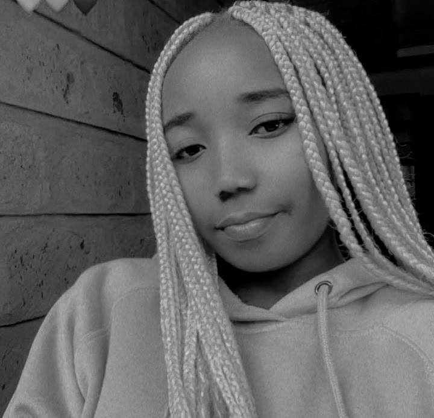

About Developer.
Hello guys and Welcome. My name is Reginalda and I'm from Kenya. I believe that whoever sees this is a music fan, Drama, Podcast, Dance and everything right. I'll tell u abit about myself. hihihii
As a 24-year-old introverted girl hailing from a close-knit family of five, I find solace and joy in the world of words. Writing is my sanctuary, a space where I can weave intricate tapestries of imagination and emotion. Whether penning down my own stories or delving into the profound narratives crafted by others, the written word is my truest companion. Alongside my passion for writing, I am an avid reader, finding solace and inspiration within the pages of books. Through literature, I embark on countless adventures, exploring diverse realms and perspectives, all from the comfort of my quiet corner.
Despite my introverted nature, my love for storytelling and literature propels me to share my thoughts and creations with the world. Through my writing, I strive to carve out a space where my voice can resonate, where my words can spark connection and understanding. In a world often bustling with noise, writing offers me the sanctuary to express myself authentically, to unveil the depths of my imagination, and to connect with others who share a similar love for the written word. In this journey of self-discovery and expression, I find solace, fulfillment, and endless inspiration.